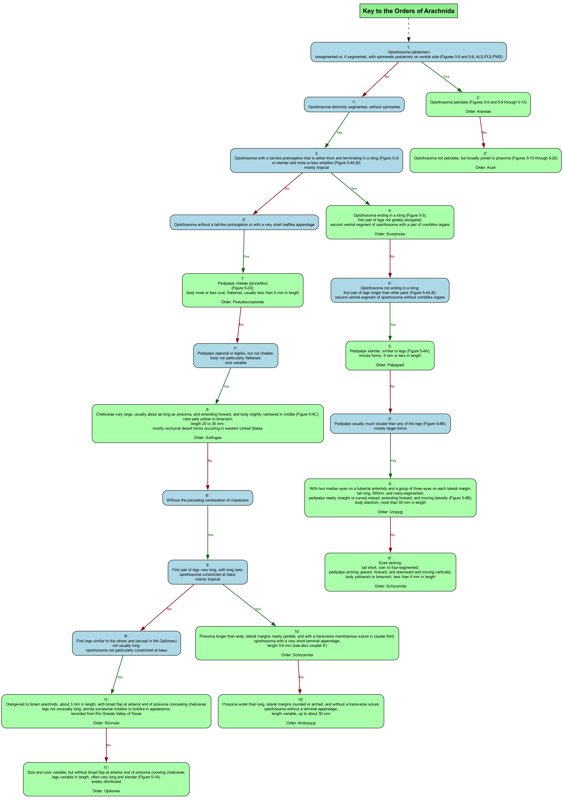


This page presents visualizations of the dichotomous key for identifying the Orders of Arachnida, based on the key from "Borror and DeLong's Study of Insects". The key has been converted into a tree structure to facilitate visual navigation of the identification process.
Edges: Green "Yes" paths indicate the specimen matches the described characteristic, while red "No" paths indicate it does not match.

The vertical layout presents the key with decision points arranged from top to bottom. Each node contains the key couplet number and the diagnostic characters. Terminal nodes (in light green) indicate the Order identification.
How to use: Start at the top and follow the path that matches your specimen's characteristics. At each decision point, choose the "Yes" path if your specimen matches the description, or the "No" path if it does not.

The horizontal layout presents the key with decision points arranged from left to right, showing the branching structure of the dichotomous key. This layout might be preferred for wider screens and provides an alternative perspective on the identification process.